|
3-4-2-1
|
Japan | 1 | - | 1 | Sweden |
3-4-3
|
| HT 0-0 | ||||||
|
FIFA World CupFriday 26 June 2026
|
||||||
- Venue
- Dallas Stadium
- Attendance
- 70,137
- Referee
- Iván Arcides Barton Cisneros
Substitution39'
K. Itakura
S. Taniguchi
Goal56'
D. Maeda
Assist: R. Doan
Substitution66'
A. Ueda
K. Ogawa
Substitution67'
R. Doan
J. Ito
- 2
Substitution75'
K. Nakamura
Y. Nagatomo
A. Seko
T. Watanabe
Yellow card77'
S. Taniguchi
Whistle45+6'
45+6'
Yellow card32'
I. Hien
Substitution37'
I. Hien
L. Bergvall
Goal62'
A. Elanga
Assist: V. Gyökeres
- 2
Substitution75'
A. Bernhardsson
D. Svensson
E. Stroud
K. Sema
Yellow card85'
V. Gyökeres
Substitution87'
V. Lindelöf
C. Starfelt
Substitution88'
G. Gudmundsson
B. Nygren
Japan | |
|---|---|
Goalkeeper | |
| 1 | Z. Suzuki |
Defender | |
| 4 | K. Itakura 39' |
| 20 | A. Seko 75' |
| 21 | H. Ito |
Midfielder | |
| 2 | Y. Sugawara |
| 7 | A. Tanaka |
| 10 | R. Doan 67' |
| 11 | D. Maeda 56' |
| 13 | K. Nakamura 75' |
| 15 | D. Kamada |
Forward | |
| 18 | A. Ueda 66' |
Substitutes | |
| 3 | S. Taniguchi 39'77' |
| 5 | Y. Nagatomo 75' |
| 14 | J. Ito 67' |
| 16 | T. Watanabe 75' |
| 19 | K. Ogawa 66' |
Sweden | |
Goalkeeper | |
| 1 | J. Widell Zetterström |
Defender | |
| 2 | G. Lagerbielke |
| 4 | I. Hien 32'37' |
| 5 | G. Gudmundsson 88' |
Midfielder | |
| 3 | V. Lindelöf 87' |
| 18 | Y. Ayari |
| 21 | A. Bernhardsson 75' |
| 24 | E. Stroud 75' |
Forward | |
| 9 | A. Isak |
| 11 | A. Elanga 62' |
| 17 | V. Gyökeres 85' |
Substitutes | |
| 7 | L. Bergvall 37' |
| 8 | D. Svensson 75' |
| 10 | B. Nygren 88' |
| 13 | K. Sema 75' |
| 15 | C. Starfelt 87' |


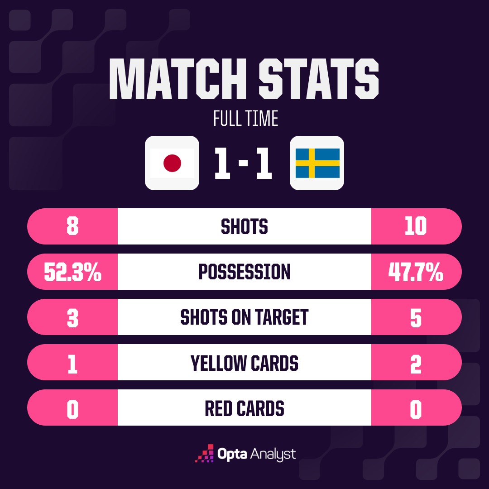
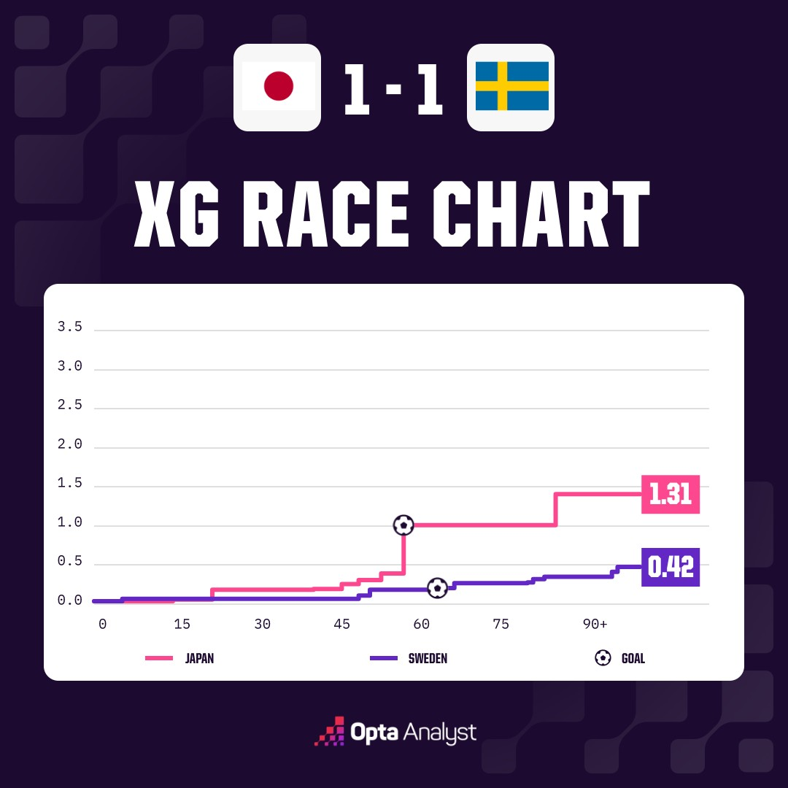
98'
Japan are undefeated in their last 5 games in the FIFA World Cup, their longest unbeaten streak in the competition (since at least 1965/1966).
98'
Sweden attempted 11 shots in this game, their lowest total in a single match in the 2026 FIFA World Cup.
98'
Japan attempted 8 shots in this game, their lowest total in a single match in the 2026 FIFA World Cup.
90+8'
That's it! The referee blows the whistle and we have reached full-time. The final score at Dallas Stadium is Japan 1-1 Sweden.
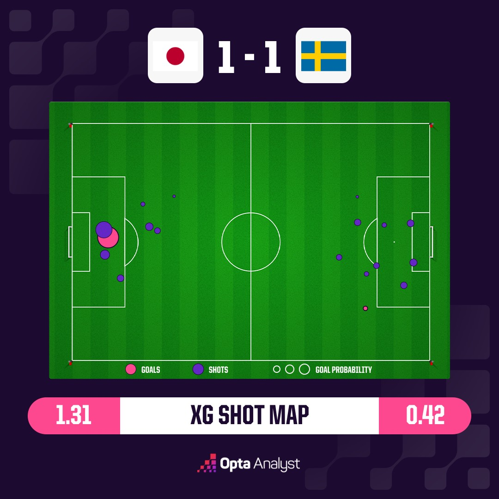
90+4'
SO CLOSE! What a shame for Sweden, as Alexander Isak hits the post. A lucky reprieve for Japan, whose goalkeeper was beaten.
90+4'
Save! A big stop from Zion Suzuki, who reacts to keep out Alexander Isak's attempt from inside the area.
90+3'
SAVED! Good work from Zion Suzuki, who stands firm to deny Anthony Elanga, who managed to get a shot away from inside the Japan area.
90+2'
Plenty of the ball in the last quarter-of-an-hour of this match for Sweden, but still Japan stand firm, despite having had only 34.91% of the ball in that period. Can Sweden make their possessional dominance count?
88'
Can Sweden make this chance count? They have won a free-kick in a threatening position after a foul from Yukinari Sugawara on Ken Sema. Will Japan's defence be tested here?
88'
Gabriel Gudmundsson’s match is over as Sweden decide to make a substitution. Benjamin Nygren enters the field in what looks like a tactical change.
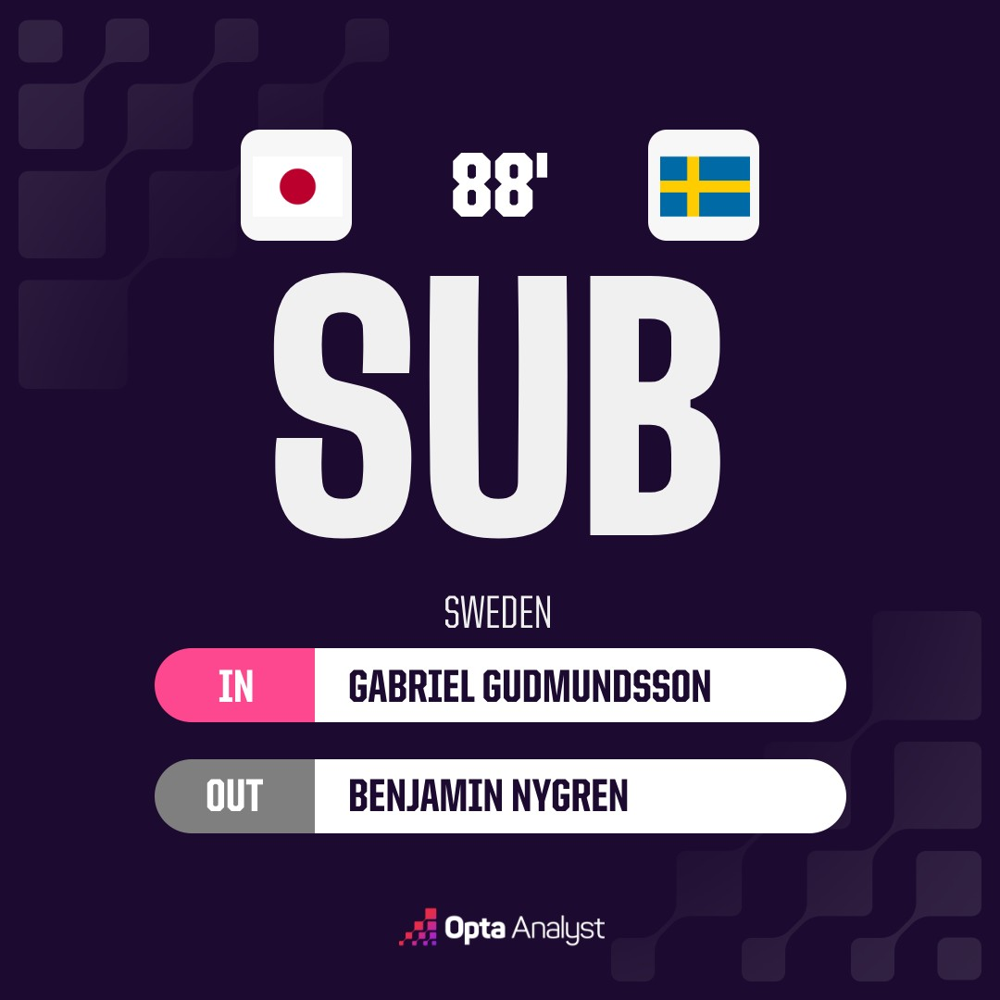
88'
Substitution. Victor Lindelöf has to make way, with Carl Starfelt coming on in their place following an injury. That is going to come as a blow for Sweden. Can they overcome it?
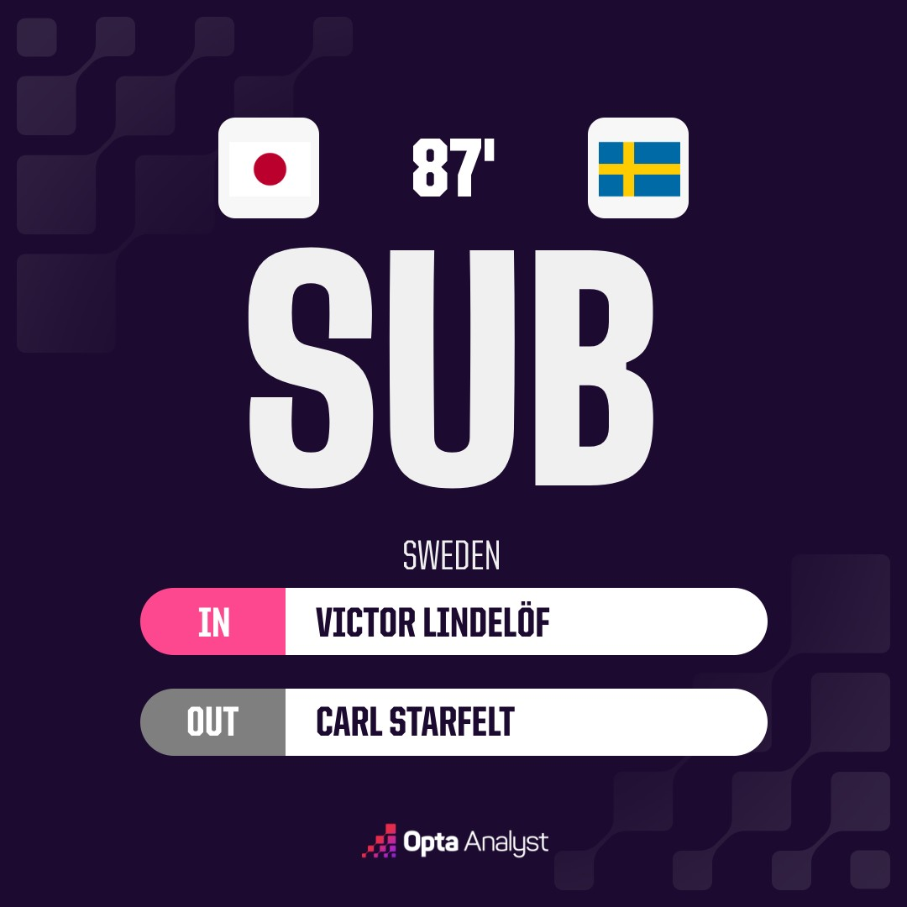
85'
Free-kick! A foul from Koki Ogawa on Gustaf Lagerbielke. It is well away from Japan’s goal, so it is unlikely to result in a chance for Sweden.
85'
A yellow card for Sweden's Viktor Gyökeres. They will have to walk a tightrope for the rest of this match, and Japan will likely look to target them and draw a second bookable offence.
84'
Free-kick! A foul from Viktor Gyökeres on Daichi Kamada. It is well away from Sweden’s goal, so it is unlikely to result in a chance for Japan.
83'
WHAT A MISS! Oh dear, oh dear, that is an awful attempt from Koki Ogawa, as a huge chance for Japan to score the goal they need goes begging. What a let off for Sweden, though. They will have to defend better than that from here on out!
82'
A chance now for Japan to get a good delivery into the box, after the ball is diverted behind for a corner. Japan have been pushing for what would be a key goal, but Sweden have stood firm so far.
81'
A chance goes begging as Gustaf Lagerbielke gets off a shot that does not hit the target. They might have done better with that one, but instead it is a goal-kick to Japan.
80'
Good play from Anthony Elanga, who draws a foul from Hiroki Ito to hand Sweden a free-kick in a dangerous position. Will they create something from this set-piece?
79'
Sweden have attempted the last 5 shots in this game, Japan last shot was taken by Daizen Maeda in the 56th minute.
79'
BLOCK! An intervention from Yukinari Sugawara might have just prevented a goal, with the defending player getting in the way of an attempt from Ken Sema. Solid defending there!
79'
MISSED! That is really poor from Victor Lindelöf, who fails to convert from a golden opportunity, with the goal gaping. Will Sweden pay for their profligacy, or can they put that miss behind them?
78'
Sweden win a corner after Daniel Svensson sees a shot diverted wide by Tsuyoshi Watanabe. Can Sweden make this opportunity count, or will Japan defend this?
77'
A yellow card for Japan's Shogo Taniguchi. They will have to walk a tightrope for the rest of this match, and Sweden will likely look to target them and draw a second bookable offence.
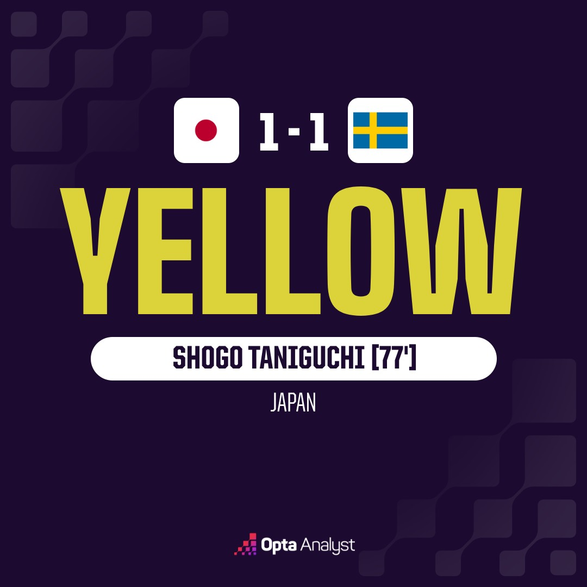
77'
This could be a chance for Sweden, after Shogo Taniguchi fouls Viktor Gyökeres, handing them a free-kick in a threatening area. A good set-piece from here could really test the Japan defense!
76'
A foul from Yukinari Sugawara on Gabriel Gudmundsson sees Sweden win a free-kick, but it is not in a dangerous position, so Japan should be confident they can defend it easily enough.
75'
A substitution for Japan sees Ayumu Seko replaced by Tsuyoshi Watanabe. There does not appear to be any obvious sign of an injury, so that is a tactical switch.
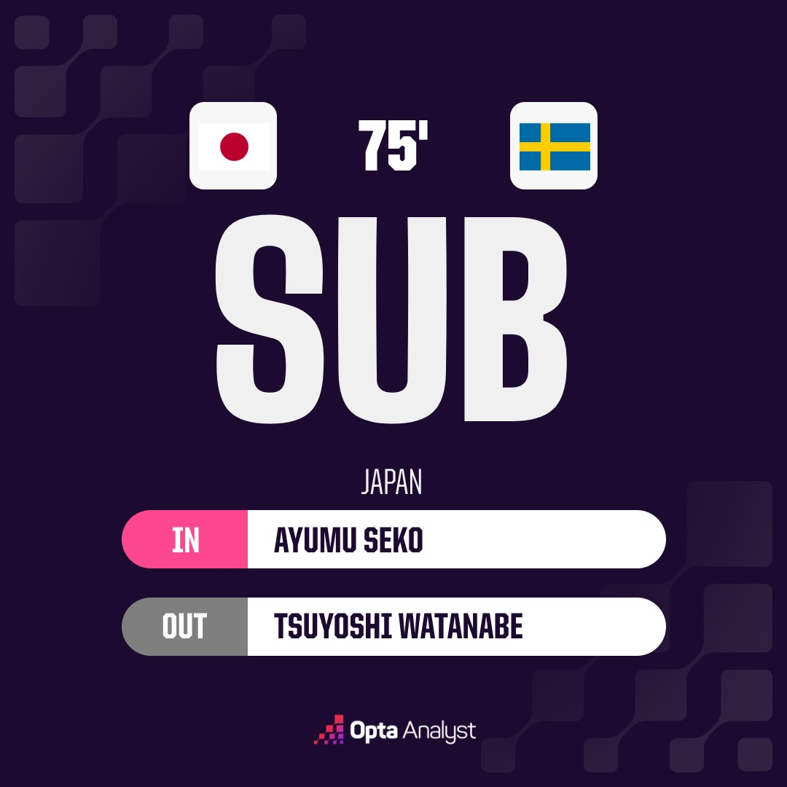
75'
Yuto Nagatomo is making his 16th appearance in the FIFA World Cup.
75'
Keito Nakamura’s match is over as Japan decide to make a substitution. Yuto Nagatomo enters the field in what looks like a tactical change.
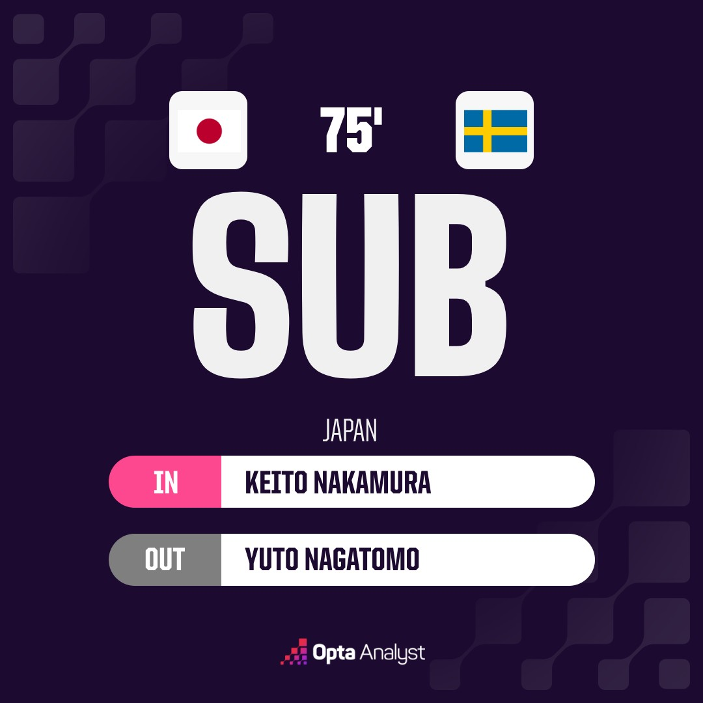
75'
Substitution! Ken Sema replaces Elliot Stroud for Sweden as the manager shuffles the pack. Can Ken Sema make an impression as this match continues?
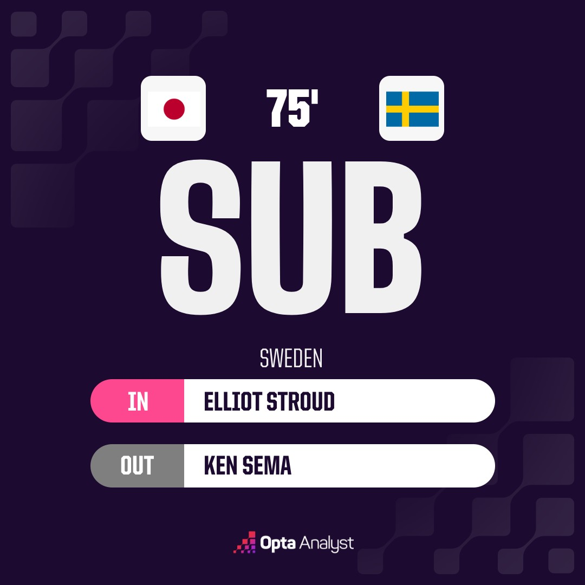
75'
Neither team has had a shot in the past 10 minutes, as this match just enters something of a down period. Japan have seen more of the ball, with 63 per cent possession, but Sweden are keeping them away from goal. There is still a chance the match will spark into life, though.
75'
The Sweden manager is looking to the substitutes’ bench, bringing on Daniel Svensson in place of Alexander Bernhardsson. Will the change make a difference? Let’s find out!
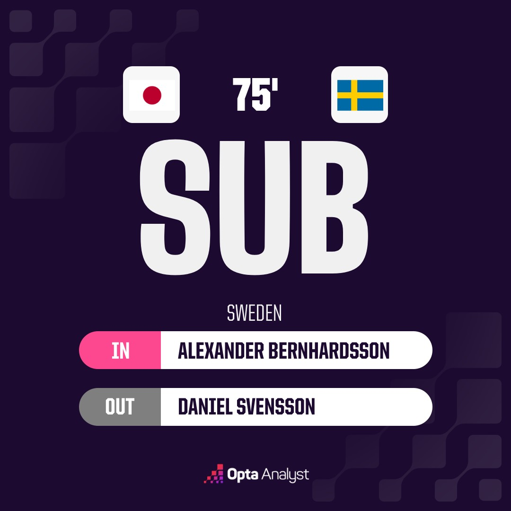
74'
Free-kick! A foul from Alexander Bernhardsson on Daichi Kamada. It is well away from Sweden’s goal, so it is unlikely to result in a chance for Japan.
72'
Free-kick! A foul from Elliot Stroud on Junya Ito. It is well away from Sweden’s goal, so it is unlikely to result in a chance for Japan.
68'
Anthony Elanga makes a run in behind but the Japan defensive line were alert, and stepped up in time to catch them offside. That run just needed to be timed better.
67'
The Japan manager is looking to the substitutes’ bench, bringing on Junya Ito in place of Ritsu Doan. Will the change make a difference? Let’s find out!
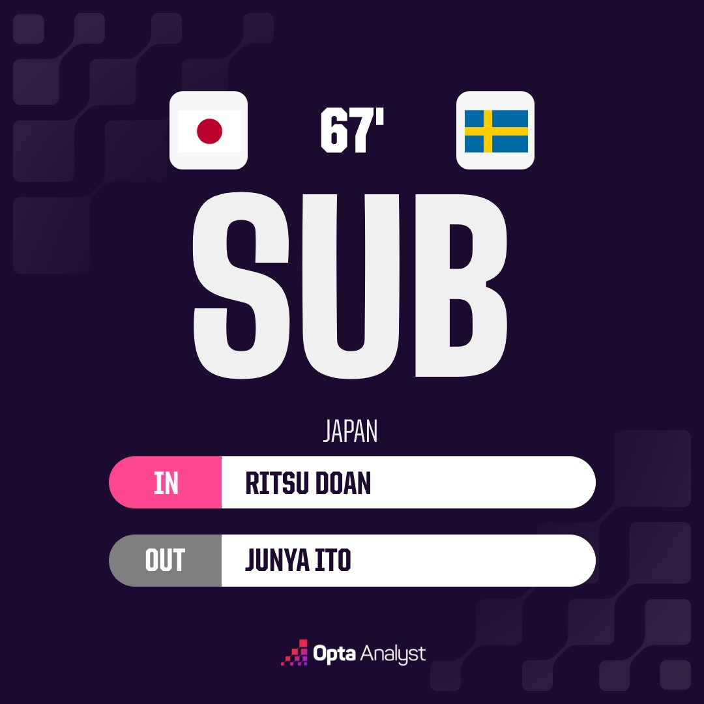
66'
A substitution for Japan sees Ayase Ueda replaced by Koki Ogawa. There does not appear to be any obvious sign of an injury, so that is a tactical switch.
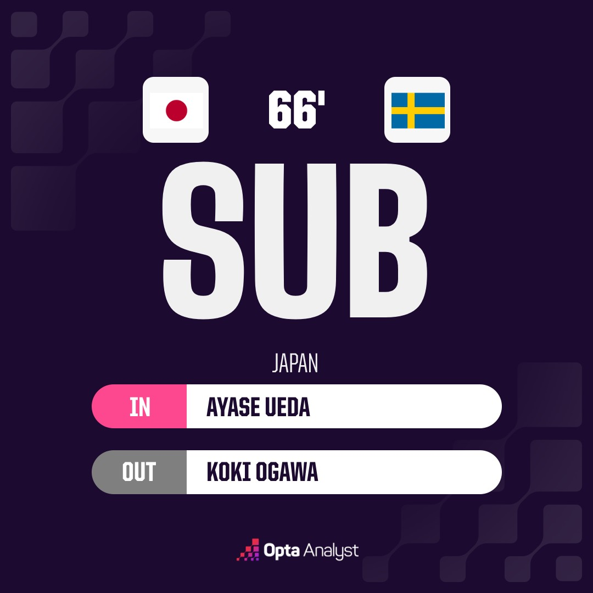
66'
Free-kick! A foul from Viktor Gyökeres on Ao Tanaka. It is well away from Sweden’s goal, so it is unlikely to result in a chance for Japan.
66'
With 25 minutes left to play, this game is about to go into its final quarter. So, that seems a good chance to check on the shot count. Sweden have had 5 efforts, with 3 of those hitting the target. Japan, on the other hand, have had 7 shots, getting 3 of those attempts on target.
65'
This feels like a spell that could matter - Sweden earning repeated chances to swing it in from wide areas.
65'
Alexander Isak's effort is deflected out for a corner. Can Sweden make anything of this set-piece?
64'
A rash challenge from Daizen Maeda, who sends Alexander Bernhardsson tumbling, giving Sweden a free-kick. It is not in a threatening position, but it gives them a chance to get back on the ball.
63'
Free-kick! A foul from Daichi Kamada on Anthony Elanga. It is well away from Japan’s goal, so it is unlikely to result in a chance for Sweden.
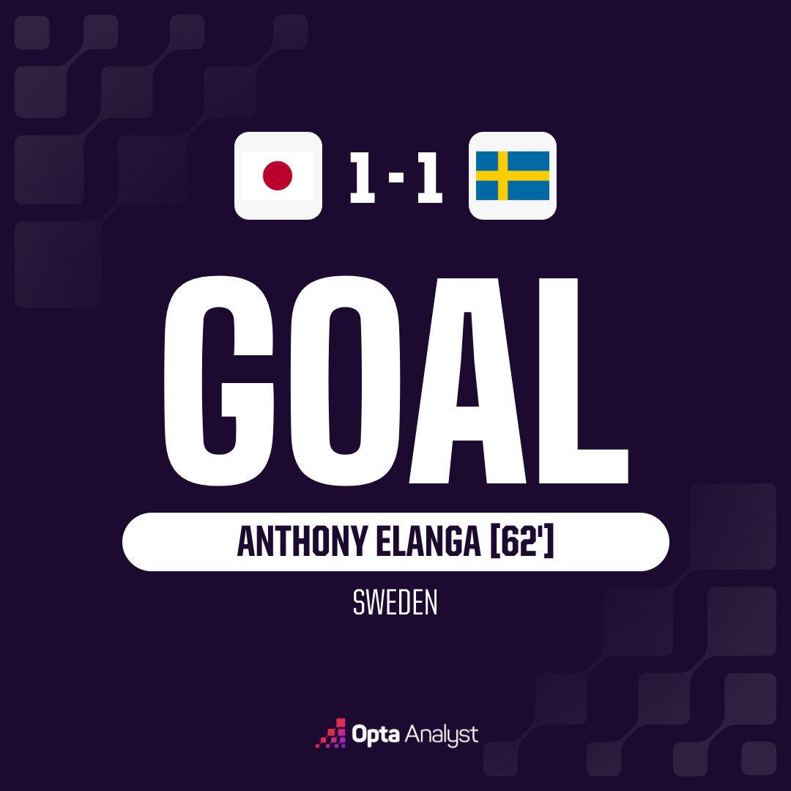
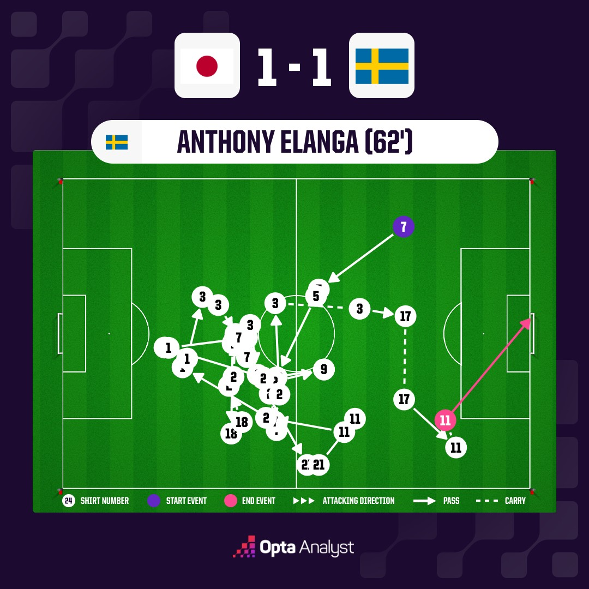
62'
Viktor Gyökeres has assisted his second goal in the 2026 FIFA World Cup.
62'
GOAL! It is all square now, after Anthony Elanga has found the net from a distance. There was space for a shot and they took it – and now the scores are level! Will Sweden be able to go on and win this from here?
62'
Anthony Elanga has scored his second goal in the 2026 FIFA World Cup.
62'
A good response from Sweden- steady on the ball now and looking to take control after falling behind.
60'
Foul! A free-kick now in a dangerous area for Sweden, after Viktor Gyökeres is fouled by Hiroki Ito. Can Sweden make the most of this opportunity?
59'
Excellent defensive work from Japan; their organization and success in key duels are effectively safeguarding their lead.
56'
Ritsu Doan has assisted his first goal in the 2026 FIFA World Cup.
56'
GOAL! Japan move in front! Daizen Maeda provides the decisive touch from inside the penalty area to leave Sweden chasing the game. It is too early to predict whether that will prove the winner, but as things stand Japan have the advantage!
56'
Daizen Maeda has scored his first goal in the 2026 FIFA World Cup, netting for the first time since 5th December 2022 against Croatia.
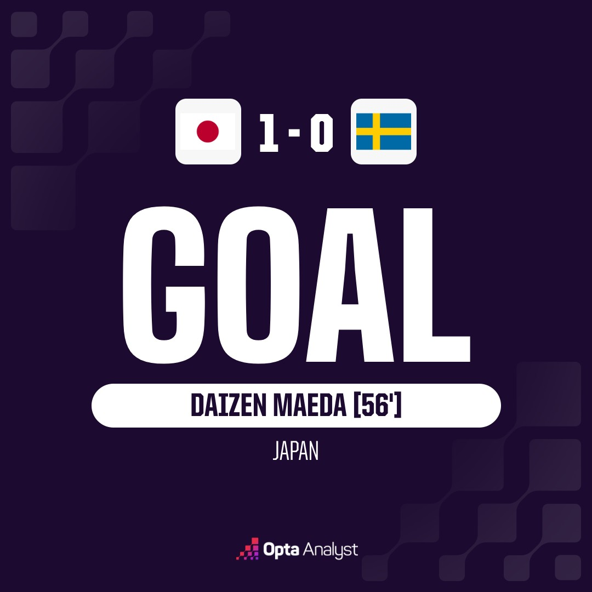
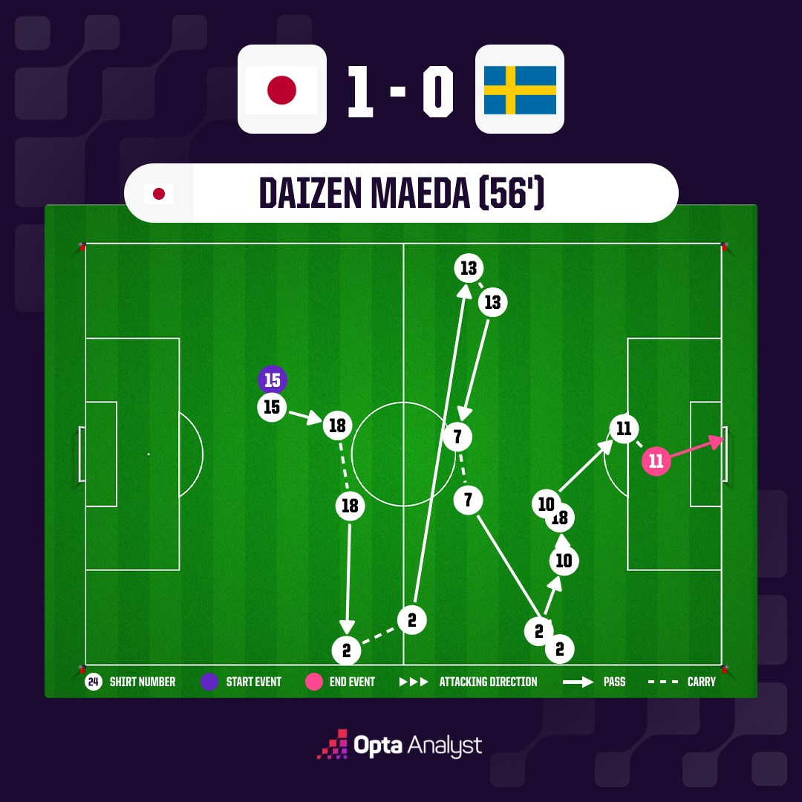
53'
That’s offside! A switched-on defensive line from Sweden, as they step up at the right time to catch Daichi Kamada offside, and the assistant referee’s flag is up.
52'
That might have been going in! A fantastic block from Gabriel Gudmundsson, who gets in the way of a goal-bound effort from Ayase Ueda. Would the goalkeeper have been beaten? We will never know.
51'
No luck – it’s offside! Daizen Maeda looked to dart in behind and get on the end of a pass, yet they just went too early, and the flag is up to signal offside.
51'
Foul! A free-kick now in a dangerous area for Japan, after Ritsu Doan is fouled by Elliot Stroud. Can Japan make the most of this opportunity?
50'
No luck! Gustaf Lagerbielke takes on a shot that, had they got it right, might have been set to test the goalkeeper, but instead it is sent off target and Japan come away unscathed.
49'
A chance now for Sweden to get a good delivery into the box, after the ball is diverted behind for a corner. Sweden have been pushing for what would be a key goal, but Japan have stood firm so far.
48'
No luck! Ao Tanaka takes on a shot that, had they got it right, might have been set to test the goalkeeper, but instead it is sent off target and Sweden come away unscathed.
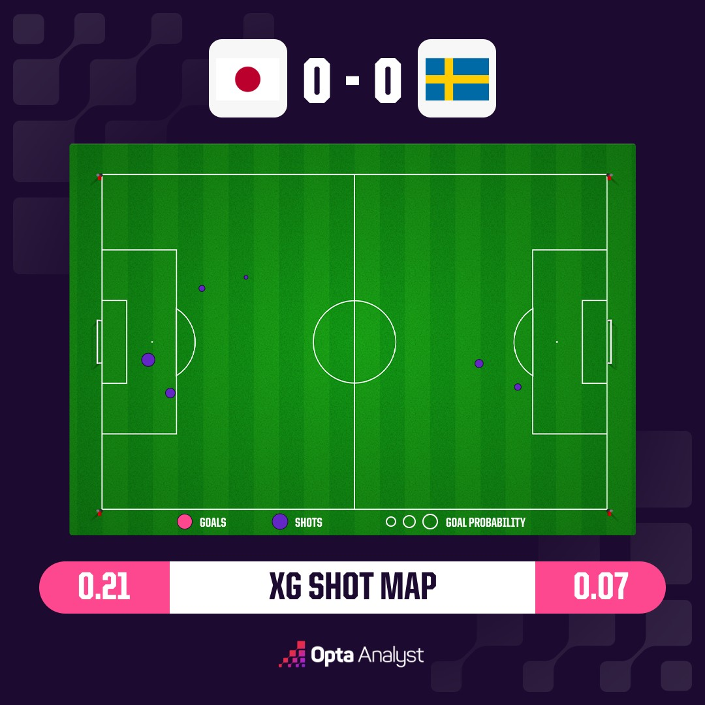
45+6'
Half-time! We reach the interval with the score level at 0-0 between Japan and Sweden. Will we see a winner in the second half?
45+3'
Viktor Gyökeres's effort is deflected out for a corner. Can Sweden make anything of this set-piece?
45+3'
A free-kick to Sweden, as Yukinari Sugawara goes in and fouls Lucas Bergvall. However, Japan will not mind giving one away in this area too much, with plenty of distance to their goal.
45+2'
That’s offside! A switched-on defensive line from Japan, as they step up at the right time to catch Alexander Isak offside, and the assistant referee’s flag is up.
45+1'
A rash challenge from Ritsu Doan, who sends Gabriel Gudmundsson tumbling, giving Sweden a free-kick. It is not in a threatening position, but it gives them a chance to get back on the ball.
45+1'
Japan win a corner after Keito Nakamura sees a shot diverted wide by Jacob Widell Zetterström. Can Japan make this opportunity count, or will Sweden defend this?
45+1'
In the last 15 minutes, it is Japan who have dominated the ball, having seen 65.03% of the possession, yet they have not been able to go and turn that into a goal just yet, with their opponents standing firm.
43'
A foul from Lucas Bergvall on Ritsu Doan sees Japan win a free-kick, but it is not in a dangerous position, so Sweden should be confident they can defend it easily enough.
43'
A free-kick to Japan, as Alexander Bernhardsson goes in and fouls Daichi Kamada. However, Sweden will not mind giving one away in this area too much, with plenty of distance to their goal.
42'
A foul from Ao Tanaka on Anthony Elanga sees Sweden win a free-kick, but it is not in a dangerous position, so Japan should be confident they can defend it easily enough.
41'
A free-kick to Sweden, as Ritsu Doan goes in and fouls Gabriel Gudmundsson. However, Japan will not mind giving one away in this area too much, with plenty of distance to their goal.
40'
Save! A long-range strike from Yukinari Sugawara was heading in, but Jacob Widell Zetterström got to it to parry it away from danger.
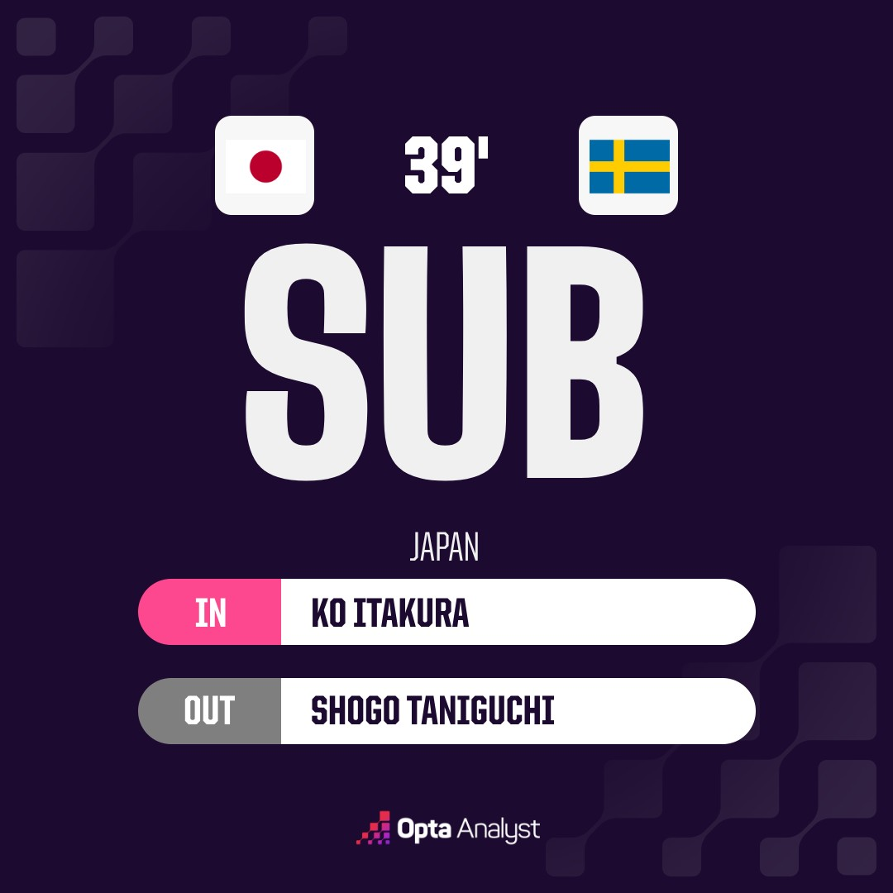
39'
Ko Itakura’s match is over as Japan decide to make a substitution. Shogo Taniguchi enters the field in what looks like a tactical change.
38'
A free-kick to Japan, as Lucas Bergvall goes in and fouls Ao Tanaka. However, Sweden will not mind giving one away in this area too much, with plenty of distance to their goal.
38'
A free-kick to Sweden, as Ayase Ueda goes in and fouls Lucas Bergvall. However, Japan will not mind giving one away in this area too much, with plenty of distance to their goal.
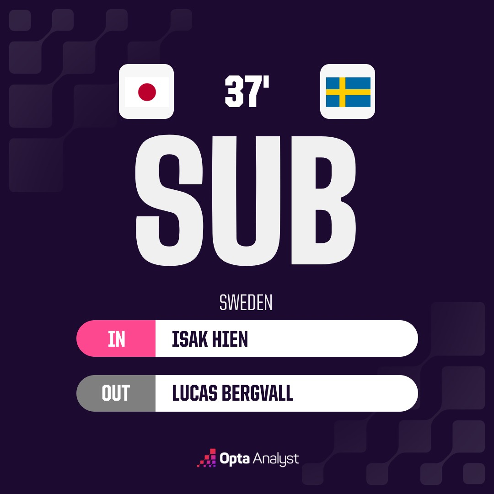
37'
Isak Hien appears to have sustained an injury, and is unable to carry on. They make way for Lucas Bergvall.
36'
It has been 30 minutes since Sweden last attempted a shot in this game.
35'
Ao Tanaka goes in on Yasin Ayari and concedes a foul. The free-kick is not in a particularly dangerous area from Japan’s viewpoint, though.
32'
BOOKING! Yellow card for Isak Hien, who is penalised for a foul. The referee waves away their remonstrations, and now they will have to be careful.
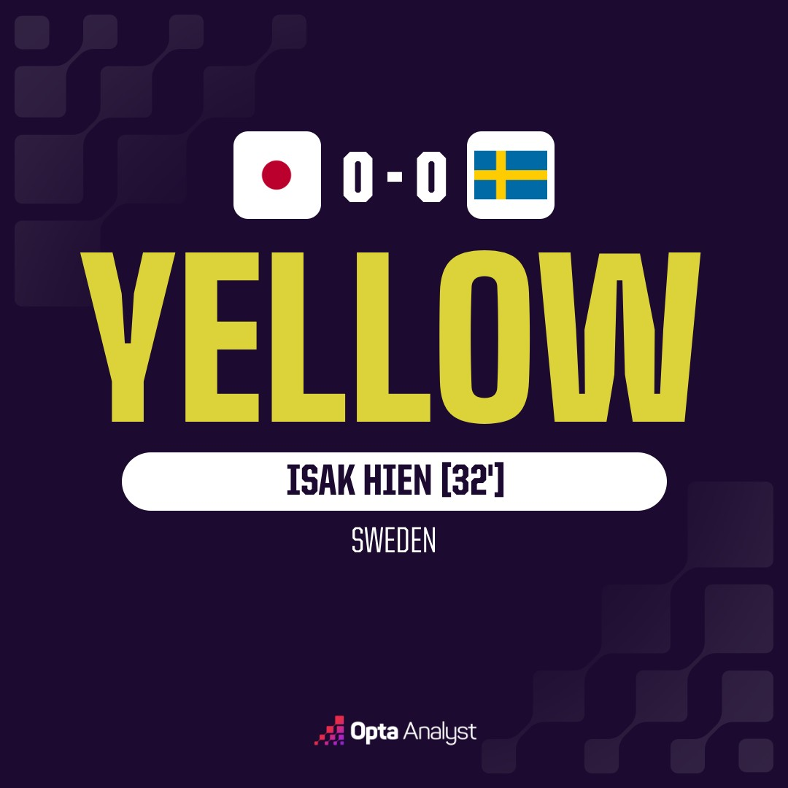
32'
A rash challenge from Isak Hien, who sends Ayase Ueda tumbling, giving Japan a free-kick. It is not in a threatening position, but it gives them a chance to get back on the ball.
32'
A lull in this match, as the teams prob and probe, but without much success. It has been 10 minutes since there was an attempt from either side, though Sweden are seeing more of the ball, with 72 per cent possession to Japan’s 28 per cent during that time.
29'
Elliot Stroud goes in on Yukinari Sugawara and concedes a foul. The free-kick is not in a particularly dangerous area from Sweden’s viewpoint, though.
28'
Free-kick! A foul from Ayase Ueda on Isak Hien. It is well away from Japan’s goal, so it is unlikely to result in a chance for Sweden.
22'
That is a disappointing effort from Daizen Maeda, who went for glory but got their attempt wrong, and the shot sailed off target. A frustrating moment for Japan.
20'
In the last 15 minutes, it is Japan who have dominated the ball, having seen 65.14% of the possession, yet they have not been able to go and turn that into a goal just yet, with their opponents standing firm.
17'
A rash challenge from Ao Tanaka, who sends Yasin Ayari tumbling, giving Sweden a free-kick. It is not in a threatening position, but it gives them a chance to get back on the ball.
16'
A rash challenge from Hiroki Ito, who sends Anthony Elanga tumbling, giving Sweden a free-kick. It is not in a threatening position, but it gives them a chance to get back on the ball.
15'
Great block from Gabriel Gudmundsson, as they get in the way of an attempt from Ritsu Doan that might have been set to cause the goalkeeper some problems. Solid defending from the Sweden player.
10'
Free-kick! A foul from Ao Tanaka on Anthony Elanga. It is well away from Japan’s goal, so it is unlikely to result in a chance for Sweden.
9'
A rash challenge from Gabriel Gudmundsson, who sends Ayase Ueda tumbling, giving Japan a free-kick. It is not in a threatening position, but it gives them a chance to get back on the ball.
7'
Offside! Ayase Ueda thought they were through on goal, but the Sweden defence stepped up in time to catch them offside, and the assistant referee puts their flag up.
6'
Alexander Bernhardsson goes for goal with a strike from distance, but Zion Suzuki is able to watch it all the way and make the save. A bit of a tester, there.
4'
A free-kick to Sweden, as Ritsu Doan goes in and fouls Yasin Ayari. However, Japan will not mind giving one away in this area too much, with plenty of distance to their goal.
3'
It’s been tight so far, and Japan are making sure it stays that way with strong defensive discipline and well-timed clearances.
2'
A chance now for Sweden to get a good delivery into the box, after the ball is diverted behind for a corner. Sweden have been pushing for what would be a key goal, but Japan have stood firm so far.
1'
KICK-OFF! And here we go! We are up and running in this clash between Sweden and Japan at Dallas Stadium. Stay tuned for all the action as it happens!
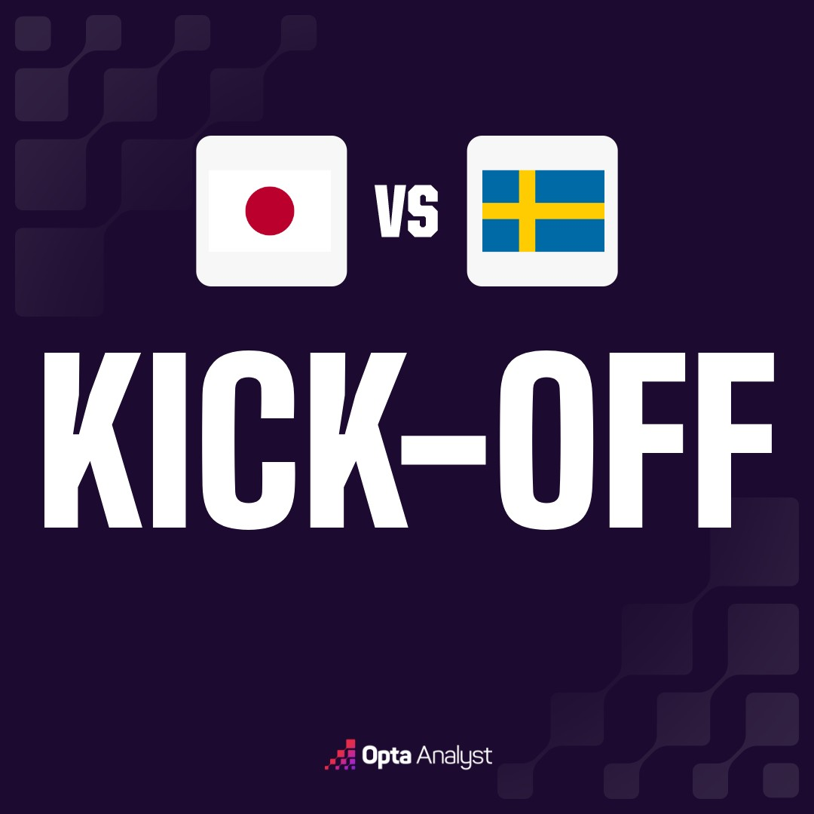
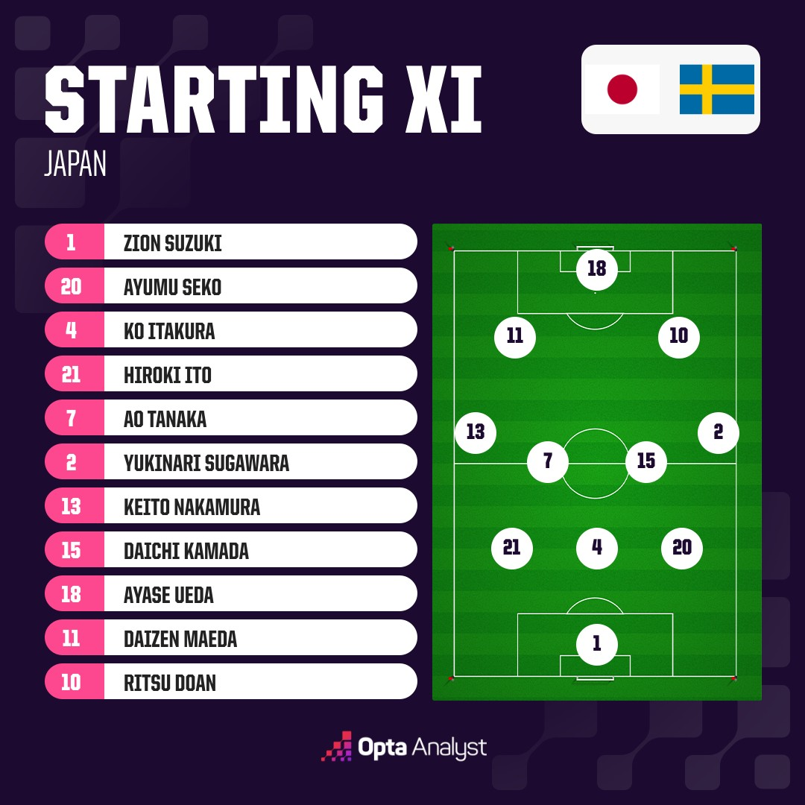
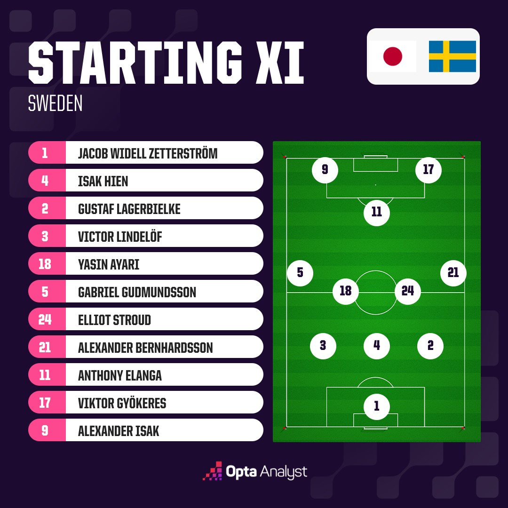
There have been 3 or more goals scored in each of Sweden's last 4 games
Both teams have scored in Sweden's last 6 games
D. Kamada has scored in the last 2 games for Japan
Sweden play Japan for a FIFA World Cup group stage match at Dallas Stadium on Thursday with the Japanese side looking to clinch a place in the Round of 32.
Japan were victorious for the first time in the competition this season when they defeated Tunisia 4-0 in their last group stage match on June 20. Ayase Ueda caught the eye with two goals. They are unbeaten in their last nine games in all competitions.
Sweden suffered a first competition loss of the year in a 5-1 defeat against the Netherlands in their last group stage game, a June 20 clash at Houston Stadium. Anthony Elanga scored in the loss. In 2026, they have won three, drawn one, and lost two.
Japan are second in the group on four points, while Sweden's three points place them third. Japan are currently in position for a place in the Round of 32, while Sweden are out of the knockout round places but still on for a place in the round of 32.
The Netherlands are atop the group on four points and are well-positioned to advance to the Round of 32. Tunisia are facing elimination, sitting fourth on zero points.
The teams played out a 1-1 draw in their previous meeting in May 2002.
Two players who have been crucial for Japan in World Cup play are Daichi Kamada and Ueda. They are the team's joint top scorers with two goals, tied for the fourth highest in the competition's scoring charts. Kamada has scored the critical first goal of the match once. Yasin Ayari has been the leading attacking threat for Sweden, netting twice in this World Cup campaign, including one match-opening goal. He is tied for fourth in the competition's scoring charts.
Both clubs have found success in the final third of late, as Japan have been on the scoresheet in their last nine games in all competitions while Sweden have been on target in eight straight.
In their last six matches in all competitions, Japan have won five and drawn one. The Japanese side scored 12 and conceded two over that period, scoring first in five of the six contests. They had four first-half goals, while their opponents failed to find the net in the first 45 minutes. Sweden have won three, drawn one and lost two in their last six. The Swedish side scored 15 and conceded 14 over that stretch, netting first in three of the six. They had five goals in the first half, while their opponents netted eight times before the break.
-
General
Possession 52.3% 52.27847.72247.7% Possession lost in defensive half 37 373434 Possession lost in middle third 40 404949 Duels 93 939393 Duels success rate 50.5% 50.53847.31247.3% Aerial duels 32 323232 Aerial duels won 53.1% 53.12546.87546.9% Successful dribbles 6 644 Fouls won 11 112020 Offsides 3 322 Corner awarded 2 288 -
Distribution
Passes 445 445395395 Long passes 49 495050 Long passes proportion (%) 11.0% 11.01112.65812.7% Passing accuracy 84.9% 84.94478.98779.0% Passes in opponents' half 239 239217217 Passing accuracy in opponents' half (%) 79.5% 79.49867.28167.3% Total passes in the final third 100 100120120 Passing accuracy in final third (%) 68.0% 6860.83360.8% Forward passes 267 267235235 Forward passes (%) 60.0% 6059.49459.5% Through balls 4 400 Final third entries 51 515151 Penalty area entries 26 263030 Total open play crosses 11 1177 Crosses 13 131616 Crossing accuracy 30.8% 30.7692525.0% -
Attack
Goals 1 111 Shots 8 81111 Shots on target 3 355 Blocked shots 2 233 Headed shots 1 144 Shots outside the box 4 455 Shots inside the box 4 466 Shots accuracy excluding blocked shots 50.0% 5062.562.5% Shooting accuracy 37.5% 37.545.45545.5% Key Passes 8 888 -
Defence
Tackles 13 1377 Tackles success rate 53.8% 53.84642.85742.9% Clearances 40 402121 Interceptions 4 455 Recoveries 42 423939 Attacking third recovery 2 255 Defensive third recovery 17 172323 Midfield third recovery 23 231111 Recoveries in attacking half (%) 4.8% 4.76212.82112.8% -
Discipline
Fouls conceded 20 201111 Yellow cards 1 122 Red cards 0 000